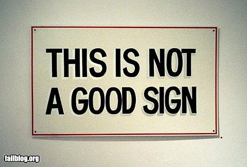
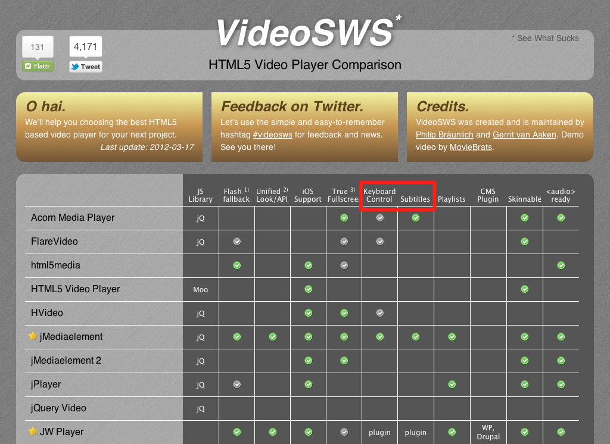
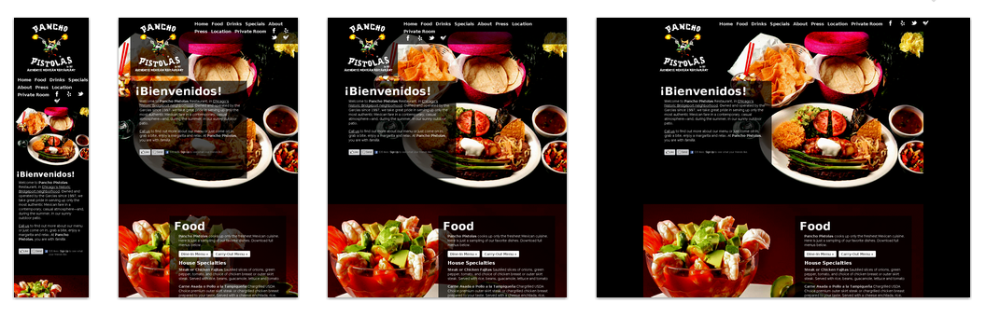
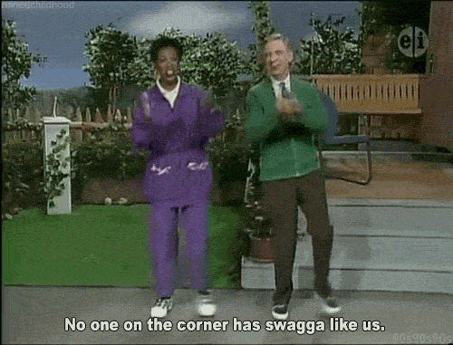

1 out of 7 people (or 15%)
is permanently disabled*
Those are real recommendations,
that may convert to sales.
Twitterpoll: Finish the sentence honestly: "When I hear the word 'accessibility' I feel ..."
— Molly E. Holzschlag (@mollydotcom) April 11, 2012
@mollydotcom honestly? - Hassled.
— Paul Boag (@boagworld) April 11, 2012
@mollydotcom stressed.
— Gareth Clubb (@digitalclubb) April 11, 2012
'Pressure'- @mollydotcom Twitterpoll: Finish the sentence honestly: "When I hear the word 'accessibility' I feel ..."
— Dennis Deacon (@deconspray) April 11, 2012
@mollydotcom "cringeworthy" lol
— Caroline Murphy (@blueocto) April 11, 2012
@mollydotcom Confused, b/c WordPress free dotcom doesn't tell me how to do that properly.
— Mike Cane (@mikecane) April 11, 2012
@mollydotcom angry about myself and almost everybody actually...
— Alain Couthures (@AlainCouthures) April 11, 2012
@mollydotcom Ashamed.
— Chris Ford (@ctford) April 11, 2012
<noscript> is no solution
If extensively used, they could hide content from non-visual users.
Awesome! — But look for legible typefaces!
Beware of JavaScript that alters font rendering,
like typeface.js, fittext.js or kern.js.
I mean <audio> and <video>.
They don’t work with the keyboard!

But it’s easy to provide accessible buttons.

Responsive Web Design
Never use
text-size-adjust:none;Use
text-size-adjust:100%;instead.
Don’t make too confusing changes to the layout.
That’s viewport width and height.
All HTML5 elements are accessible.
<nav> <div>
New elements are not enriched with
additional information*.
* Firefox starts integrating those
<nav role="navigation">
Let’s do the Accessibility dance now:

Twitter me: @yatil
Use a spacebar or arrow keys to navigate